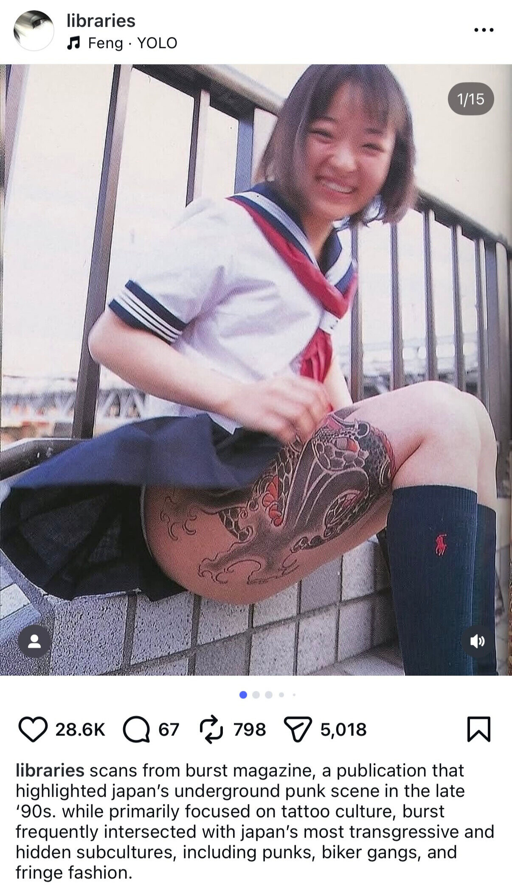
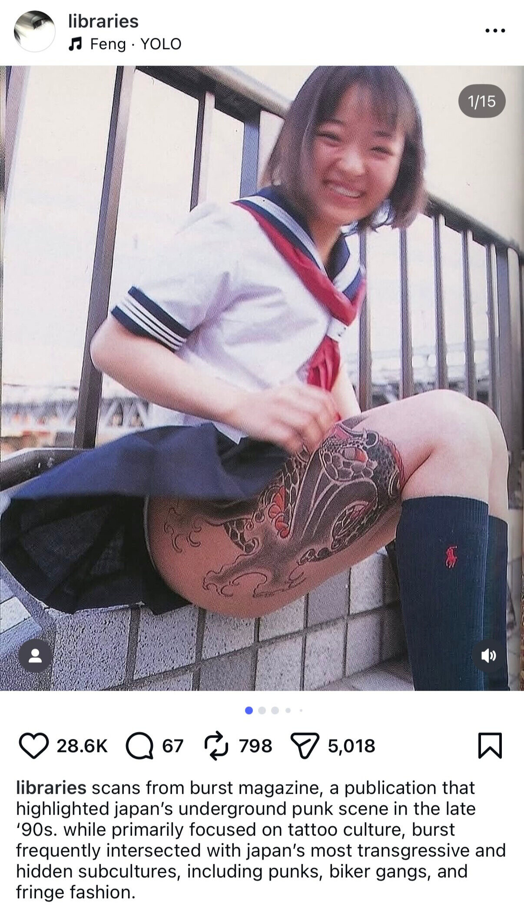

1. AUDIO EMBEDS: I independently curated 3 posts aligned with Feng's aesthetic, focusing on distinctive visuals and subcultures across Asia that complemented his underground sound. Pairing these elements created content that felt visually engaging while naturally introducing his music.
 

2. ORGANIC MUSIC FEATURES: After building familiarity with Feng's sound, I introduced his work visually by incorporating his latest music videos into the ongoing "songs i found for you this week" series, highlighting new releases within music culture.
3. POP CULTURE FEATURE: After building awareness for his music and videos, Feng was included alongside other rappers at the Gucci Fashion Show during Milan Fashion Week and featured in organic LIBRARIES content, bringing him to the front of people's feeds. This placement extended his visibility beyond music and positioned him in spaces that aligned with his niche.